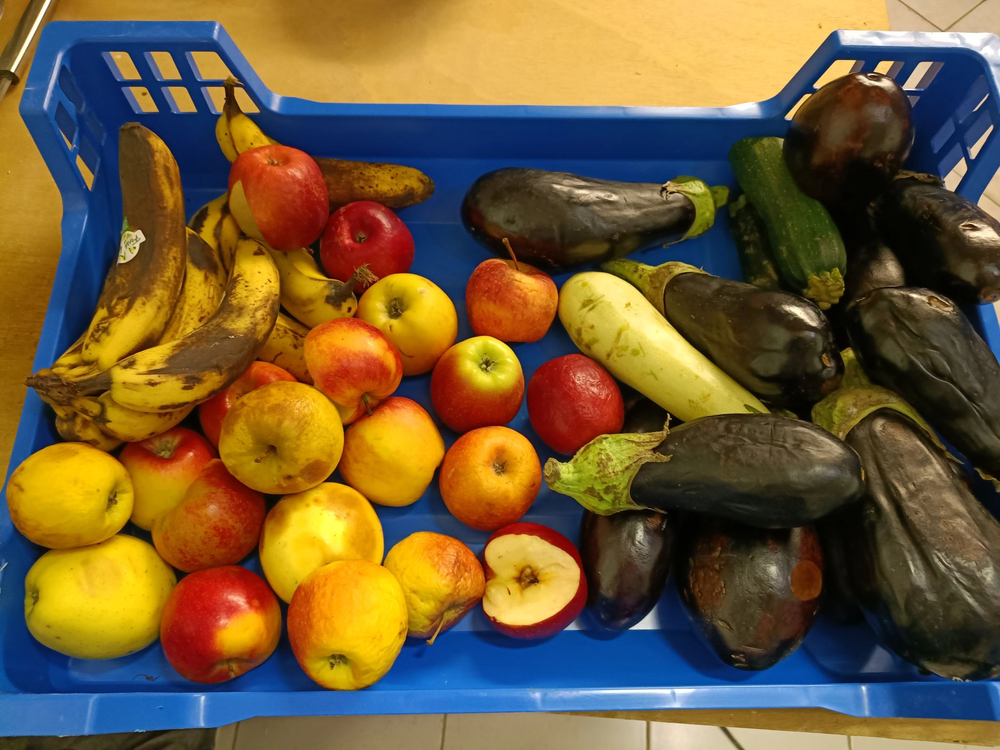
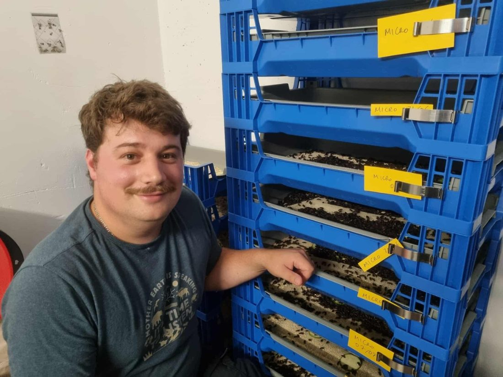
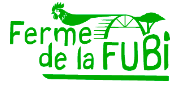
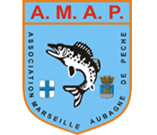
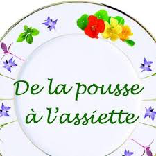
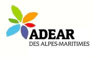
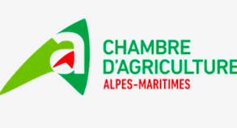

1
Invendus bio locaux
Mise en place d'un circuit de récupération de produits frais biologiques invendus ou non consommables auprès des distributeurs et agriculteurs bio locaux.

Prod'Insectes élève des vers de farine (Tenebrio molitor) à Antibes, en pratiques d'agriculture biologique. Sans additif ni colorant, nourris de végétal local — pour vos poules, poissons, animaux de compagnie et la faune du jardin.

« Docteur en fonctionnement des agrosystèmes, j'ai créé Prod'Insectes pour accompagner la transition vers des pratiques plus éco-responsables : produire ici, à Antibes, une alimentation animale plus saine et respectueuse de l'environnement. »
Découvrir la démarcheNos insectes sont nourris exclusivement de végétal : avoine, fruits et légumes bio invendus, récupérés auprès de distributeurs et agriculteurs locaux. Leur guano devient un engrais organique concentré qui nourrit à son tour les cultures de la région.
Mise en place d'un circuit de récupération de produits frais biologiques invendus ou non consommables auprès des distributeurs et agriculteurs bio locaux.

Les vers sont nourris avec des denrées biologiques non transformées (céréales, fruits, légumes et champignons).
Une partie de la production est utilisée à l'entretien et la croissance de l'élevage. L'autre partie est conditionnée et commercialisée (vers de farine vivants ou déshydratés, poudre d'insectes).
Le guano est composé des déjections des insectes : c'est un produit riche en matière organique qui, une fois mélangé aux résidus alimentaires des insectes, forme le frass.
Le frass est filtré et tamisé pour récupérer une poudre sèche très fine, riche en azote, phosphore, potassium et autres composés issus des insectes. Cette poudre forme un engrais organique unique en son genre, aux propriétés fortifiantes et durables pour les plantes. Les éléments qui le composent sont utilisables directement par les plantes.
Les insectes font partie du régime alimentaire de nombreux animaux (mammifères, poissons, oiseaux, reptiles, amphibiens). Leur haute qualité améliore significativement la qualité nutritionnelle et sanitaire des animaux qui les consomment.
L'engrais organique produit par les insectes est une alternative très intéressante aux engrais chimiques. Il est également utilisable en agriculture biologique.
Il est donc possible de produire des denrées de qualité biologique en utilisant les insectes de notre production pour l'alimentation animale et l'engrais organique pour les cultures arboricoles et maraîchères locales. La boucle est bouclée !
Quatre produits, un seul élevage : vers vivants, vers déshydratés, poudre d'insectes enrichie — et l'engrais organique issu du guano.
Retrouvez-nous au marché mensuel de producteurs et artisans du lycée agricole d'Antibes. Prochainement présents sur le marché de producteurs et artisans de la Garoupe, tous les troisièmes dimanches du mois.
En attendant la boutique en ligne, commandez directement par mail — réponse rapide, retrait local ou expédition en France métropolitaine.
Écrire un mailNous cherchons des distributeurs locaux : coopératives, animaleries, magasins bio des Alpes-Maritimes.
Éleveur, maraîcher, pépiniériste, horticulteur, animalerie ou magasin bio : parlons volumes, tarifs et partenariats de distribution.

Ferme de la Fubi
AMAP — Association de pêche
De la pousse à l'assiette
ADEAR 06
Chambre d'agriculture 06